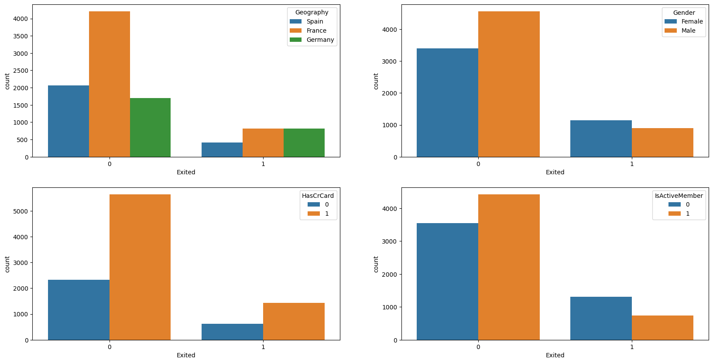

Key Findings & Recommendations
1. Finding: Age is the Strongest Predictor of Churn
Age is the most influential feature in predicting churn. The risk of churn increases significantly for customers in the 40-50 age bracket.
- Develop and market specialized financial products for this demographic, such as retirement planning, investment services, or family education funds.
- Implement a targeted loyalty program for high-value customers over 40 to enhance their sense of value and recognition.
2. Finding: Inactivity is a Critical Precursor to Churn
IsActiveMember = 0) is one of the top three drivers of churn. Analysis shows that non-active members are significantly more likely to leave compared to active members.
- Establish an automated alert system that flags high-value customers who have been inactive for a specific period (e.g., 3 months).
- Trigger targeted re-engagement campaigns for these flagged customers, offering incentives such as bonus interest rates, fee waivers, or personalized consultations.
3. Finding: Product Portfolio Complexity Drives Churn
NumOfProducts) is a strong predictor of churn. Customers with just 1 or 2 products are more likely to be loyal.
- Shift cross-selling focus from quantity to synergy. Train sales staff to recommend products that genuinely complement a customer's existing portfolio.
- For high-value customers with 3+ products and high churn scores, proactively offer a "portfolio review" service to simplify their finances and reinforce the bank's value proposition.
4. Finding: Geographic Disparities Indicate Regional Challenges
- Conduct a targeted market analysis in Germany to understand local competitor offerings and customer pain points.
- Gather feedback from German customers and front-line staff to identify specific areas for service or product improvement.
Data Analysis & Methodology
Step 1: Data Access & Exploratory Data Analysis (EDA)
The first step was to access and perform quality checks on the customer data file (bank_churn.csv). The dataset contains 10,000 customer records with 14 distinct attributes.
import pandas as pd
df = pd.read_csv('bank_churn.csv')
df.info()

Step 2: Feature Engineering & Data Preparation
To prepare the data for modeling, we performed a series of preprocessing steps:
- Feature Selection: Removed irrelevant columns like
RowNumber,CustomerId, andSurname. - Data Splitting: Split dataset into training (75%) and testing (25%) sets using stratified sampling.
- Data Encoding: Converted categorical features (
Geography,Gender) to numerical format using One-Hot and Ordinal Encoding. - Data Standardization: Scaled numerical features using
StandardScaler.
from sklearn.model_selection import train_test_split
from sklearn.preprocessing import StandardScaler, OneHotEncoder, OrdinalEncoder
# Remove irrelevant columns
to_drop = ['RowNumber','CustomerId','Surname','Exited']
X = churn_df.drop(to_drop, axis=1)
y = churn_df['Exited']
# Split data
X_train, X_test, y_train, y_test = train_test_split(X, y, test_size=0.25, stratify=y, random_state=1)
# Standardization example
scaler = StandardScaler()
scaler.fit(X_train[num_cols])
X_train[num_cols] = scaler.transform(X_train[num_cols])
X_test[num_cols] = scaler.transform(X_test[num_cols])Step 3: Model Building, Optimization & Selection
We trained multiple classification models. Recognizing the dataset's imbalance, we employed an advanced approach integrating XGBoost classifier with Synthetic Minority Over-sampling Technique (SMOTE) in a pipeline.
from imblearn.pipeline import Pipeline
from imblearn.over_sampling import SMOTE
import xgboost as xgb
# Create SMOTE + XGBoost Pipeline
pipeline = Pipeline([
('smote', SMOTE(random_state=42)),
('xgb', xgb.XGBClassifier(objective='binary:logistic', eval_metric='logloss', random_state=42))
])
# Use GridSearchCV to find the best parameters
grid_search = GridSearchCV(estimator=pipeline, param_grid=param_grid, scoring='roc_auc', cv=3)
grid_search.fit(X_train, y_train)
best_xgb_model_smote = grid_search.best_estimator_Model Evaluation & Comparison
Model Performance Overview
| Model | Accuracy | Precision (Churn) | Recall (Churn) | AUC |
|---|---|---|---|---|
| XGBoost with SMOTE | 0.8408 | 0.6231 | 0.5521 | 0.8484 |
| Random Forest | 0.8608 | 0.8132 | 0.4106 | 0.8446 |
| K-Nearest Neighbor | 0.8428 | 0.7283 | 0.3635 | 0.7986 |
| Logistic Regression | 0.8092 | 0.5964 | 0.1945 | 0.7722 |
Final Model Selection & Justification
For most churn prediction scenarios, the primary goal is to maximize identification of at-risk customers (high recall) to minimize revenue loss, while maintaining strong overall ability to distinguish between churners and non-churners (high AUC).
Final Model Performance (XGBoost with SMOTE)
Classification Report:
precision recall f1-score support
0 0.89 0.91 0.90 1991
1 0.62 0.55 0.59 509
accuracy 0.84 2500
macro avg 0.76 0.73 0.74 2500
weighted avg 0.83 0.84 0.84 2500
AUC Score: 0.8484Explaining Model Predictions (SHAP)
To understand why the XGBoost model makes its predictions, we conducted SHAP (SHapley Additive exPlanations) analysis. This reveals the impact of each feature on individual predictions.
Global Insights: Key Drivers of Customer Churn

Individual Customer Attribution
We used SHAP force plots to dissect predictions for individual customers.


Final Conclusion & Strategic Action Plan
From Insights to Impact
Based on these findings, we recommend a proactive and segmented approach to customer retention.
| Strategy Pillar | Recommended Action | Data-Driven Rationale |
|---|---|---|
| 1. Proactive Retention | Deploy the XGBoost model to generate monthly "Churn Risk Scores" for every customer. Use SHAP force plots to provide service teams with top 3 reasons for high-risk scores. | The model's high AUC (0.85) and Recall (55%) make it effective for identifying at-risk customers. SHAP provides the "why" needed for personalized conversations. |
| 2. Targeted Engagement | Launch re-engagement campaigns for "Non-Active Members" in medium-to-high risk categories. Offer bonus interest rates, free financial reviews, or new feature tutorials. | IsActiveMember is a top-three predictor. SHAP analysis confirms that inactivity is a powerful force pushing customers towards churn. |
| 3. Portfolio Optimization | Flag customers with 3+ products for a "Portfolio Health Check." Proactively reach out to help them consolidate accounts. Revise sales incentives to reward value over sheer quantity. | NumOfProducts is a top predictor of churn. Goal is to turn a friction point (complexity) into a positive engagement opportunity (simplification and value). |
| 4. Regional Strategy Review | Initiate a specific review of the German market. Conduct surveys and competitive analysis to understand why churn rates are significantly higher than in France and Spain. | Geography_Germany consistently appears as a key factor increasing churn risk in both EDA and SHAP analysis. |
Next Steps & Continuous Improvement
- A/B Test Retention Strategies: Implement recommended actions on test groups to measure their direct impact on reducing churn compared to control groups.
- Monitor and Retrain: The churn model should be retrained periodically (e.g., quarterly) with new data to adapt to changing market conditions and customer behavior.
- Integrate with CRM Systems: Churn risk scores and SHAP insights should be integrated directly into Customer Relationship Management (CRM) systems to empower front-line staff with actionable intelligence.